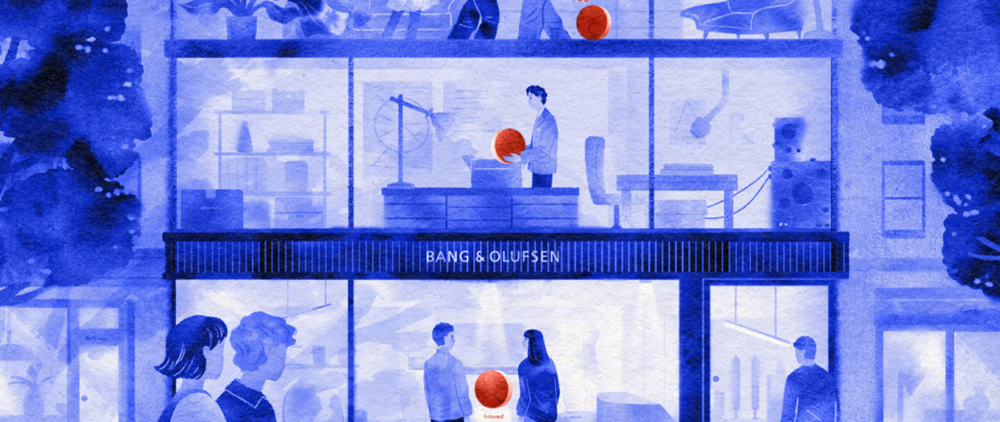

Our Story
다락방에서 시작된
100년의 소리

1925년, 덴마크의 작은 마을 스트루에르.
두 젊은 엔지니어의 다락방에서 시작된 이야기는 한 세기가 지난 지금도 같은 질문으로 이어집니다. 더 좋은 소리, 더 오래가는 디자인.
연혁
-
1925
다락방의 시작
피터 방과 스벤 올룹슨,
스트루에르의 다락방에서 라디오를 만들다. -
1939
Beolit 39
'Beo' 이름을 처음 붙인
베이클라이트 라디오. -
1972
Beogram 4000
세계 최초 전자제어 접선식
턴테이블. MoMA 영구 소장. -
1978
MoMA 전시
뉴욕 현대미술관
'Design for Sound' 단독 전시.
창립자의 말
“최고만을 만들겠다는 흔들림 없는 의지로 ...
끊임없이 새로운 길을 찾는다.”“A never-failing will to create only the best ... persistently to find new ways.”
Peter Bang & Svend Olufsen
Philosophy
-
Sound
공간 어디에서 들어도 같은 감동이 닿도록,
소리가 머무는 공간까지 함께 설계합니다. -
Design
유행보다 시간을 견디는 형태.
오래 곁에 두고 싶은 디자인을 만듭니다. -
Craft
알루미늄을 깎고 원목을 다듬는 손끝의 정성이
스트루에르 공장에서 이어집니다.
100
- Century Red
- Chestnut Brown
- Century Blue